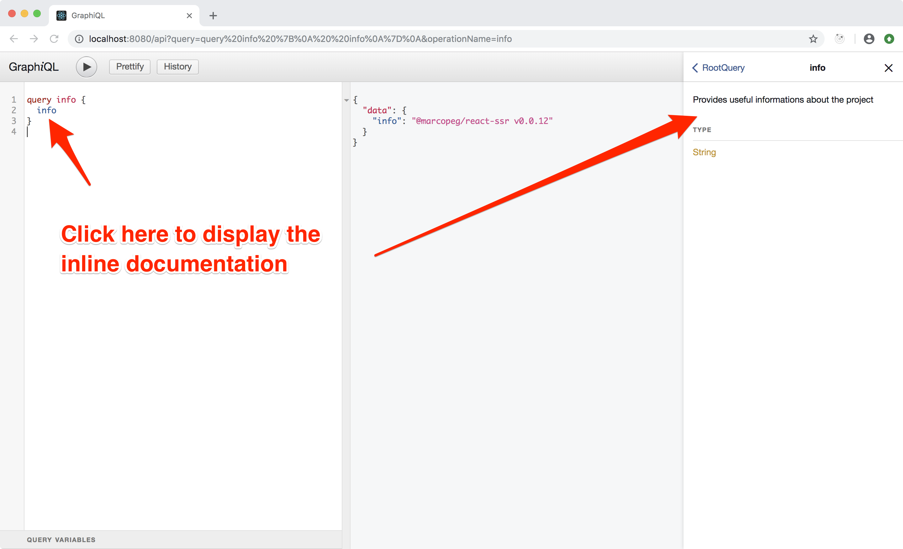

GraphQL - Setup
The first place where to deal with GraphQL is in the backend of our app.
In the server side rendering tutorial you set up a simple ExpressJS server that is capable of rendering our React app.
Now you are going to extend this server and create a fully working GraphQL endpoint.
NPM Dependencies
GraphQL comes as two NPM libraries that are going to handle all the heavy lifting for us:
npm install --save \
graphql \
express-graphql
Api Route
GraphQL works by posting requests to a single endpoint. In my apps I often use the
generic endpoint /api, and you are going to do the same in this tutorial. But mind
that this is just the way I use to do... you can set this as you want!
Edit /ssr/boot.js and import the GraphQL middleware
(that we are going to create):
import { graphQLHandler } from './graphql'
then apply the middleware on /api just before app.use(createSSRRouter()):
app.use('/api', graphQLHandler)
GraphQL Schema
Create /ssr/graphql/index.js:
import { GraphQLSchema, GraphQLObjectType } from 'graphql'
import expressGraphql from 'express-graphql'
// manifest of the available queries
const queries = {
info: require('./info.query').default,
}
// manifest of the available mutation
// const mutations = {}
// package the GraphQL schema for the app
const schema = new GraphQLSchema({
query: new GraphQLObjectType({
name: 'RootQuery',
fields: queries,
}),
// mutation: new GraphQLObjectType({
// name: 'RootMutation',
// fields: mutations,
// }),
})
// ExpressJS middleware that mount GraphQL
export const graphQLHandler = (req, res) => expressGraphql({
schema,
graphiql: process.env.NODE_ENV === 'development',
context: { req, res, data: {} },
})(req, res)
There are a few things to note down about this file.
Thing n.1: we declare queries and mutations as objects and we require some
files into them. You can immagine those files as the capabilities of our api.
A query allow you to read data, a mutation allow you to change data. Those are simple GraphQL conventions and you should honor them so to explicitly declare ground level intentions when you expose or consume an API.
(I have commented out the "mutation" section as we don't have any yet.)
Thing n.2: the property graphiql enable a developer console that you can
access through your browser and use to test and explore your API. It's a fundamental
tool for development, but you should care to disable it in production.
Thing n.3: the property context is used to provide some shared memory to any
API endpoint. As you can see I use it to forward the req and res object, as well
an empty data object that comes really in handy when handling authentication in
nested queries (but that's kinda advanced and we are not going to use it yet).
Your first query
Create /ssr/graphql/info.query:
import { GraphQLString } from 'graphql'
import ssr from '@marcopeg/react-ssr/package.json'
export default {
description: 'Provides info regarding the react-ssr version',
type: GraphQLString,
resolve: () => `${ssr.name} v${ssr.version}`,
}
This file implemens a fully woring GraphQL endpoint. Simple, right?
In the previous step we "mounted" this query on the info endpoint. Now we declare
this endpoint of type string and it outputs... a string.
Run it!
Now I will introduce you to a new NPM script:
npm run start:dev:api
This will start your backend (basically /ssr/boot.js) in development mode and run it
through nodemon so to automatically restart it when you change any
source file. It will also apply Babel on the fly, so you don't have to build your project in advance.
Open your browser to:
http://localhost:8080/api
What you see is called graphiql ans it's the development tool where you can test your GraphQL API.

NOTE: GraphQL is nothing more than a typed REST interface.
You can use it through curl (if you are inclined to do so):
curl 'http://localhost:8080/api?' -H 'Content-Type: application/json' -H 'Connection: keep-alive' --data-binary '{"query":"query getInfo { info }","variables":null,"operationName":"getInfo"}'